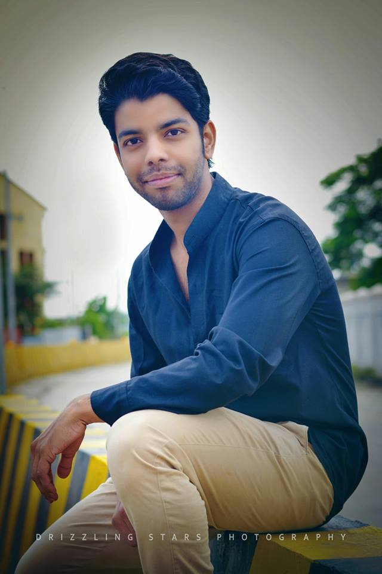

<section class="wp-about">
<div class="container">
<div class="row">
<div class="col-sm-6">
<div class="about-inner">
<div class="about-me">
<h2>Who am i ?</h2>
<p>I would like to introduce myself as a highly creative Web Designer with more than 5 years of experience specializing in front end development. Experienced with all stages of the designing cycle for dynamic web projects.</p>
<p>I started as an HTML/CSS developer back in 2014 and since then I'm improving my skills with practice as much as I can.</p>
<p>I am also a man of strong morals and principles which guide me through life.</p>
</div>
</div>
</div>
<div class="col-sm-6">
<div class="about-media">
<div class="about-picture">

</div>
</div>
</div>
</div>
</div>
</section>
